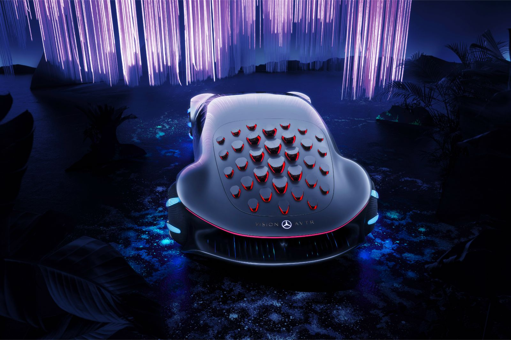
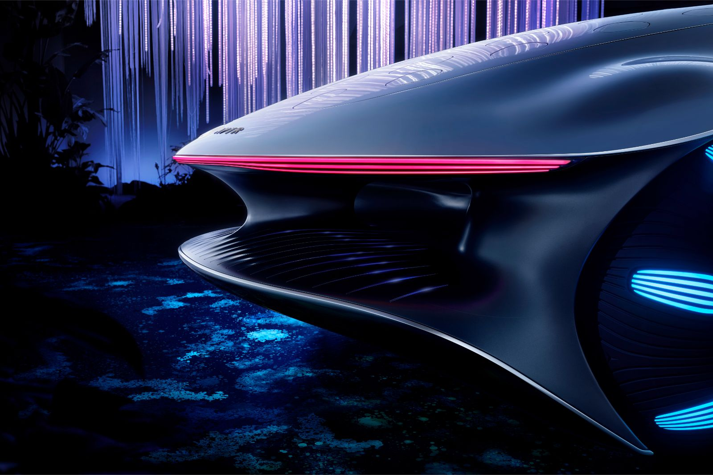

The VISION AVTR
Inspired by the future
CONCEPT
Mercedes-Benz introduced the Vision AVTR concept: the electric prototype has a range of up to 700 kilometers and was inspired by the movie Avatar. Mercedes-Benz presented the Vision AVTR (Advanced Vehicle Transformation) concept at the Consumer Electronics Show (CES), an event currently taking place in Las Vegas, USA. According to German manufacturer officials, the prototype was inspired by the movie Avatar.
PREMIER
When a real-life car takes inspiration from a far-out fantasy film like Avatar, you know it’s going to be wild. Mercedes-Benz certainly didn’t disappoint in that regard with VISION AVTR, a new concept vehicle that not only looks like it time traveled here from the future, but also runs on vehicle systems controlled by the driver’s mind.
Powered by four individually controllable electric motors with all-wheel drive, the car can move 30 degrees sideways through “crab movement,” thanks to the ability to drive the front and rear axles simultaneously or in opposite directions. A central control pad is used in place of pedals, and the steering wheel vibrates and pulsates like a living creature.
All of these things are pretty out there, but let’s start with what’s got to be the weirdest feature. A brain-computer interface (BCI) device attaches to the driver’s head with a headband and measures brain waves to trigger functions like operating the radio, interior lights, and navigation destinations. The idea is to avoid being distracted by these functions while using the “intuitive control” console unit to drive the car. The look of the VISION AVTR is vaguely reptilian, its rear end covered in 33 scales that can move individually. Referred to as “bionic flaps,” they open, close, ripple, and change colors according to the car’s movements.
The VISION AVTR creates physical sensations in the console unit to mimic “energy flows” that transmit the feeling of wind resistance while driving in various directions. The console also recognizes the driver by their breathing patterns to personalize the driving experience. In place of a dashboard is a giant curved display module projecting real-time footage of the road and surrounding environment, along with optional 3D graphics of Pandora, the fictional setting of the movie Avatar.
EXTERIOR/INTERIOR
Each wheel is powered by its own electric motor, and together they produce an impressive 469 horsepower. The car’s battery gives it a driving range of up to 435 miles and fully charges in just 15 minutes. While most electric cars have batteries made from toxic and unethically mined materials like cobalt and lithium, the VISION AVTR’s organic cell battery is made of graphene, so it’s theoretically recyclable via composting.
“When the boundaries between vehicle and living beings are lifted, Mercedes-Benz combines luxury and sustainability and works to make the vehicles as resource-saving as possible,” reads the company’s website. “With the VISION AVTR, the brand is now showing how a vehicle can blend harmoniously into its environment and communicate with it. In the ecosystem of the future, the ultimate luxury is the fusion of human and nature with the help of technology. The VISION AVTR is thus an example of sustainable luxury in the field of design. As soon as you get in, the car becomes an extension of your own body and a tool to discover the environment, much as in the film humans can use avatars to extend and expand their abilities.”
Needless to say, most of the technologies featured in this concept car aren’t ready for prime time. Some of them are still just fun ideas that may or may not ever become a reality, but they do represent some sustainable and forward-thinking goals for the automotive industry to move toward.
MORE PAWS THAN WHEELS — In the video, Gorden Wagener, chief design officier for the Daimler Group, explains that the ATVR doesn't so much have wheels as it does "animal paws." The paw-and-flower-inspired wheels enable the vehicles to "crab walk" at 30 degrees, which would likely be a boon for parking in tight, parallel spaces.
Instead of a steering wheel, there's a central control pad that the driver (or passenger) can rest their hand on and move left or right, backwards or forwards, to pilot the car, should they wish to... but the idea is that the car will be primarily autonomous.
A CAR THAT TALKS TO YOU — Vera Schmidt, director of advanced user experience design, says with the AVTR the idea is to make it an extension of the owner rather than merely being an object beholden to human commands. There's no steering wheel, no display buttons, and no touch screens. All interactions are controlled with gestures or the via central control unit (which for extra, biologically-inspired strangeness, pulses like a heartbeat), and the interface's confirmations include full-surface (rather than full-screen) projections on the interior.
The exterior is devoid of any sharp corners, and there are translucent panels in lieu of conventional doors, so if you ever get to drive one you're going to want to wear pants which, granted, is probably good advice whatever you're driving. It's the motoring equivalent of wearing closed shoes when riding an e-scooter, really.
FLAPS THAT "TALK" — 33 flaps on the rear of the vehicle affect the aerodynamics and "communicate" with other drivers (they change angle and color to indicate accelerating, turning or braking). Like the rest of the lighting on and in the AVTR Vision the flaps are AI-powered, which Mercedes says allows the car to "express emotions." That's some ludicrous marketing speak if ever we've heard it, but we can't deny we're enthralled by the vehicle nonetheless.
Whether we'll ever actually see the AVTR on an actual road (rather than a closed, private one resembling a runway) remains to be seen, but Mercedes-Benz is certainly playing the hype-building marketing game right.